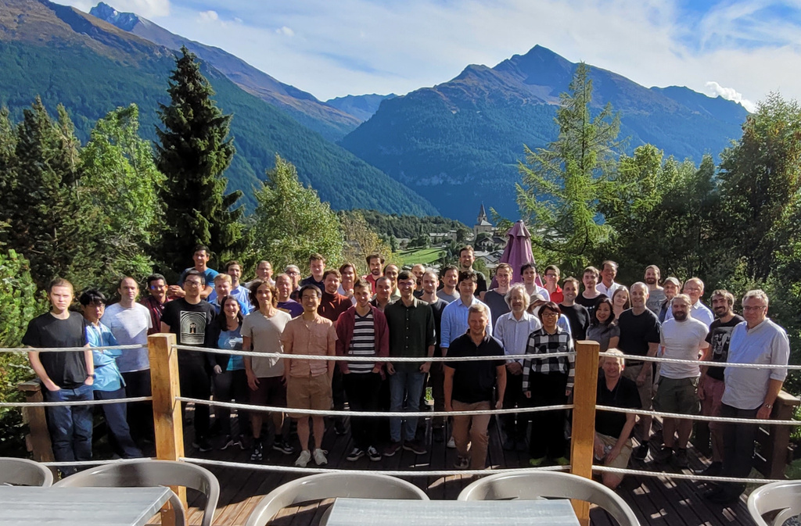

Background
Large-scale semantic processing and strong computer assistance of mathematics and science is our inevitable future. New combinations of AI and reasoning methods and tools deployed over large mathematical and scientific corpora will be instrumental to this task. The AITP conference is the forum for discussing how to get there as soon as possible, and the force driving the progress towards that.
Topics
- AI and big-data methods in theorem proving and mathematics
- Collaboration between automated and interactive theorem proving, in particular their AI/ML aspects
- Common-sense reasoning and reasoning in science
- Alignment and joint processing of formal, semi-formal, and informal libraries, Formal Abstracts
- Methods for large-scale computer understanding of mathematics and science
- Combinations of linguistic/learning-based and semantic/reasoning methods
- Formal verification of AI and machine learning algorithms, explainable AI
Sessions
There will be several focused sessions on AI for ATP, ITP, mathematics, relations to general AI (AGI), Formal Abstracts, linguistic processing of mathematics/science, modern AI and big-data methods, and several sessions with contributed talks. The focused sessions will be based on invited talks and discussion oriented. AITP'24 is planned as an in-person conference. Virtual participation may be possible in exceptional situations.
Confirmed Participants/Speakers/Panelists (TBC)
| João Araújo | Universidade Nova de Lisboa | |
| Thibault Gauthier | Czech Technical University in Prague | |
| Ben Goertzel | SingularityNET | |
| Sean Holden | University of Cambridge | |
| Jan Jakubuv | Czech Technical University in Prague | |
| Mikoláš Janota | University of Lisbon | |
| Moa Johansson | Chalmers University | |
| Cezary Kaliszyk | University of Innsbruck | |
| Peter Koepke | University of Bonn | |
| Konstantin Korovin | The University of Manchester | |
| Tomáš Mikolov | Czech Technical University in Prague | |
| Miroslav Olsak | University of Cambridge | |
| J.D. Phillips | Northern Michigan University | |
| Michael Rawson | TU Wien, Austria | |
| Stephan Schulz | DHBW Stuttgart | |
| Martin Suda | Czech Technical University in Prague | |
| Josef Urban | Czech Technical University in Prague | |
| Adam Vandervorst | SingularityNET | |
| Sean Welleck | Carnegie Mellon University | |
| Zsolt Zombori | Alfréd Rényi Institute of Mathematics |
Invited talks (TBA)
Dates
- Submission deadline:
May 5Extended: May 12, 2024 - Author notification: June 20, 2024
- Conference registration: TBA
- Camera-ready versions: TBA
- Conference: September 1-6, 2024
Program Committee (TBC)
| Jasmin Christian Blanchette | LMU Munich |
| David Cerna | Czech Academy of Sciences |
| Michael R. Douglas (co-chair) | Stony Brook University |
| Ulrich Furbach | University of Koblenz |
| Thibault Gauthier | Czech Technical University in Prague |
| Thomas C. Hales (co-chair) | University of Pittsburgh |
| Sean Holden | University of Cambridge |
| Mikoláš Janota | University of Lisbon |
| Moa Johansson | Chalmers University |
| Cezary Kaliszyk (co-chair) | University of Innsbruck |
| Peter Koepke | University of Bonn |
| Konstantin Korovin | The University of Manchester |
| Mirek Olsak | University of Cambridge |
| Bartosz Piotrowski | IDEAS NCBR |
| Michael Rawson | TU Wien |
| Stephan Schulz (co-chair) | DHBW Stuttgart |
| Martin Suda | Czech Technical University in Prague |
| Josef Urban (co-chair) | Czech Technical University in Prague |
| Sean Welleck | Carnegie Mellon University |
| Zsolt Zombori | Alfréd Rényi Institute of Mathematics |
Pictures from the previous conferences



Location, Prices and Further Local Information
The conference will take place from September 1 to September 6 2024 in
the
CNRS Paul-Langevin Conference Center
located in
the mountain village of Aussois in Savoy. Dominated by the "Dent
Parrachée", one of the highest peaks of La Vanoise, Aussois is located
on a sunny plateau at 1500 m altitude, offering a magnificent panorama
of the surrounding mountains and a direct access to the downhill ski
slopes or cross country slopes in winter.
The total price for accommodation and food for the five days will be around
600 EUR.

Arrival/Departure:
Aussois is less than 2h from the airports of Lyon, Geneve, Chambery, Annecy, Grenoble and Turin. There are trains and buses to Modane from these airports. Aussois is 8km from the Modane TGV station with direct trains from/to Paris. We will organize a bus for the participants from there to Aussois. Further buses to these airports / station can be found here and it is easy to get a taxi from Modane to Aussois and back.